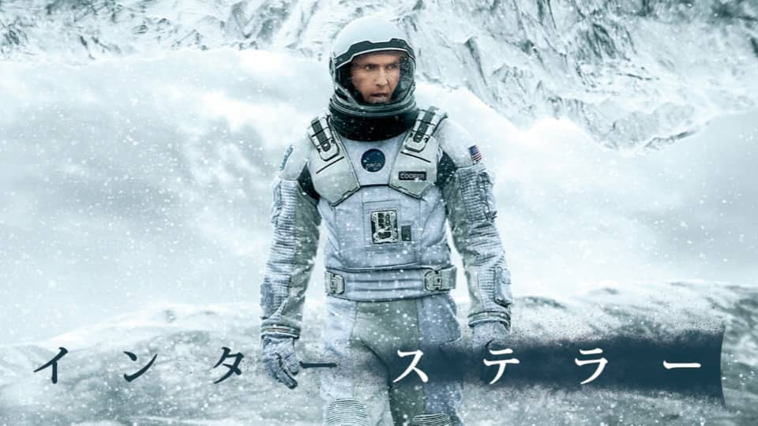

トランスフォーマー
この作品は乗り物から人型へと変形することができるロボットが地球を攻撃してくる同じようなロボットと戦っていくというものです。小さい頃に見た時に変形するロボットがすごくかっこよくてそこからずっと好きな作品です。何度も登場する変形シーンや迫力のある戦闘シーン、カーチェイスシーンが個人的に好きなシーンです。シリーズのほとんどを映画館で見ているのですがその作品も迫力がすごくてただ見入っていました。
インターステラー
この作品は砂嵐による食糧危機で人類が滅亡しかけているので主人公達が第２の地球となる惑星を探して宇宙に行くというものです。初めてこの作品を見たときは映画前半の伏線が後半になって回収されたことによって前半の出来事がどういうことなのかということやそれぞれの出来事が何を意味していたのかということが理解できた時は鳥肌が立つぐらい凄い、面白いと感じました。是非一度は見てみて欲しいです。
ヴァイオレットエヴァーガーデン

この作品は戦場で兵士として戦い、両腕を失って義手となった少女が戦場で大切な人から最後に言われた「愛してる」という言葉の意味を探していくというものです。この映画はTVアニメの続編で感動できるシーンがたくさんあり、自分も映画を見終わったときは涙を流していました。TVアニメを見てから映画を見るとより深く作品に入り込むことが出来てより感動できると思います。